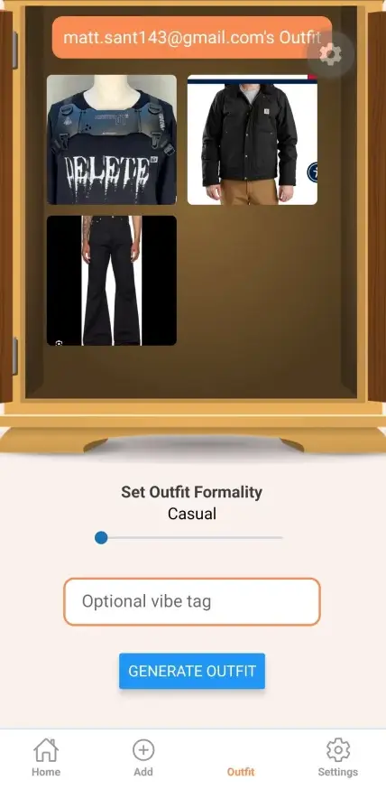
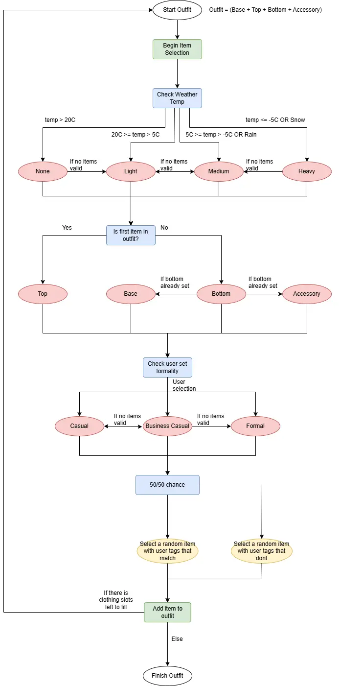

~S
~S

Process
STYLIST is a mobile application created as a group project for SFU IAT 359: Mobile Computing. Its function is to serve as a digital catalogue of clothing items that users input into the application. We used React Native and external APIs to build this application and implement its features. The main feature of STYLIST is that the user can algorithmically generate outfits from their catalogued items based on several factors, such as weather and formality. My role in the group was to build this feature, as well as the add-clothing-item feature and its UI/UX. This task, on its own, was by far the most complex in the entire project.

My goal was to distill the process of selecting an outfit for the day into a logical algorithm simple enough to implement, but also with enough depth such that the outfits generated make sense and aren't arbitrary. First, I began with the factors that we already knew would be part of the algorithm. These would be the temperature ranges that we, as a group, discussed would be utilized using the weather API, as well as matching the formality of each clothing item. This was easy enough, but I was challenged when facing the issue of how the algorithm would deal with cases where there was no clothing item that fit the confirmed properties of the outfit. Then, I deduced that the logical behaviour of the algorithm should fall back to similar property values in these cases. For example, if there are no semi-formal tops in the clothing pool, then a casual top would do. Overall, STYLIST ended as a polished and fully functional application, and the entire group received stellar marks for our work on the project. My experience with this project allowed me to develop and apply my systems design and programming skills to a complex development case.
